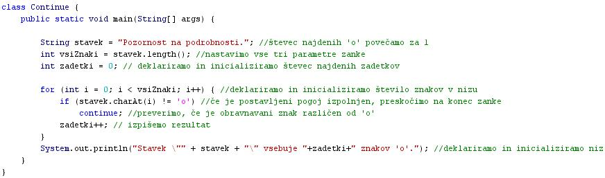

STAVEK CONTINUE
- Stavek "continue" preskoèi tisto ponovitev zanke, ki se trenutno izvaja.
- Angleška beseda "continue" pomeni "nadaljuj".
- Oglejmo si programèek, ki se s spomoèjo zanke sprehodi skozi izbrani stavek in v njem prešteje vse èrke 'o'.
- Opis delovanja programa: V vsaki ponovitvi zanke se v stavku (to je niz znakov) pomaknemo za en znak naprej. Èe novi znak ni 'o', takoj skoèimo na konec zanke, poveèamo števec zanke za 1 in se v novi ponovitvi zanke pomaknemo na novi znak, kjer postopek ponovimo. Èe je trenutno obravnavani znak enak èrki 'o', poveèamo števec zadetkov za 1. Ko preletimo vse znake v stavku (nizu), še izpišemo število najdenih èrk 'o' v njem.
class Continue {
public static void main(String[] args) {
String stavek = "Pozornost na podrobnosti.";
int vsiZnaki = stavek.length();
int zadetki = 0;
for (int i = 0; i < vsiZnaki; i++) {
if (stavek.charAt(i) != 'o')
continue;
zadetki++;
}
System.out.println("Stavek " + stavek + " vsebuje "+zadetki+" znakov 'o'.");
}
}
- Programi pogosto vsebujejo veè zank.
- Nekatere zanke lahko teèejo znotraj drugih zank.
- Manjše zanke, ki so del veèjih zank, imenujemo notranje zanke.
- Notranje zanke imenujemo tudi vgnezdene zanke.
- Naèin programiranja, pri katerem najdemo manjše zanke v notranjosti veèjih zank, imenujemo gnezdenje zank.
- Veèje zanke, ki vsebujejo manjše zanke, imenujemo zunanje zanke.
- Tudi pri stavku "continue" razlikujemo med dvema razliènima možnostima.
- Stavek "continue" brez oznake skoèi na konec najbolj notranje zanke in preveri, èe je pogoj za izvajanje te zanke izpolnjen.
- Obstaja še stavek "continue" z oznako, ki ga bomo spoznali v naslednji uèni enoti
VAJA 26:
- V okolju za pisanje izvorne kode v jeziku Java, za prevajanje in za interaktivno delo zapiši zgornji program "Continue". Pomagaj si s sliko.
- Kodo lahko tudi kopiraš iz te datoteke in jo prilepiš v okolje, v katerem pišeš programèke. Pozor: koda, ki jo boš kopiral/a, vsebuje eno, dve, tri ali štiri napake. Èe želiš, da bo program deloval, moraš napake odkriti in jih odpraviti.
- Izvorno kodo shrani pod imenom "ImePriimek26.java". ImePriimek je seveda tvoje lastno ime in priimek.
- Datoteko "ImePriimek26.java" prevedi.
- Prevedeno datoteko zaženi, preveri rezultat v interaktivnem oknu in poklièi profesorja, da vidi rezultat.
1. Vprašanja:
1. Kaj pomeni angleška beseda "continue"?
2. Kaj je naloga stavka "continue"?
3. Kaj so notranje zanke?
4. Kaj so zunanje zanke?
5. Kateri dve vrsti stavka "continue" poznamo?
6. Katero vrsto stavka "continue" smo spoznali v tej uèni enoti?
7. Zapiši vse spremenljivke in njhove podatkovne tipe, ki smo jih deklarirali in inicializirali v vaji te uène enote.
8. Zapiši vse metode ali funkcije na nizih ali znakih, ki jih najdeš v programu iz vaje te uène enote.
9. Pojasnila programa na sliki izvorne kode so med seboj pomešana, tako da ne pojasnjujejo pravilno stavkov, ki so jim pripisana. Ko napišeš program v okolju drjava, prerazporedi pojasnila tako, da bodo dejansko ustrezala stavkom programa.
10. Potem ko izdelaš vajo 26 in jo pokažeš profesorju, spremeni program tako, da izloèiš iz njega stavek "continue"? Kakšen je rezultat? Razloži, zakaj se delovanje programa spremeni.
2. Zapiši od ene do pet kljuènih besed, ki povzemajo vsebino te uène enote.
3. Povezave do dodatnih informacij.
Spletni priroènik proizvajalca programskega okolja Java. To je podjetje Sun.
|